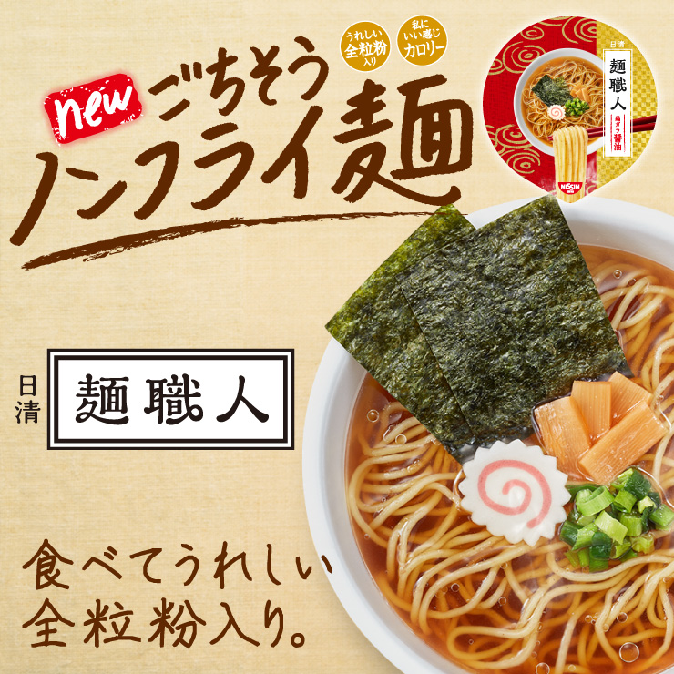

全粒粉とは、小麦粉の一種で、小麦の外皮などをまるごと挽いたものです。
小麦胚芽とは、小麦のやがて芽になる部分のことです。
いずれも胚乳部のみを使用する通常の小麦粉に比べ食物繊維やビタミン、ミネラルを多く含みます。
- 鶏だしの旨みを効かせた上品な鶏ガラ醤油スープ。ネギの香りをアップし、あっさりしながらもクセになる味わいにリニューアルしました。
1食 ¥151(税込)
いますぐ購入する- 芳醇なごまの香り、野菜の旨みとコクが特長の味噌スープ。
1食 ¥151(税込)
いますぐ購入する- スッキリしながらもしっかりとした旨みが感じられるしおスープ。さわやかな柚子の香りはそのままに、鶏油を加えてよりクセになる味わいにリニューアルしました。
1食 ¥151(税込)
いますぐ購入する
- 濃厚な味わいの担々スープ。ごまの豊かな香りと、程よい辛味を効かせました。
1食 ¥151(税込)
いますぐ購入する- ポークの旨みを効かせたまろやかなとんこつスープ。ガーリックとごま油の香りをアップし、より食欲をそそる味わいにリニューアルしました。
1食 ¥151(税込)
いますぐ購入する- 黒酢の豊かな香りと酸味をしっかりと立たせつつ、唐辛子の辛味をバランスよく効かせた酸辣湯スープ。
1食 ¥151(税込)
いますぐ購入する